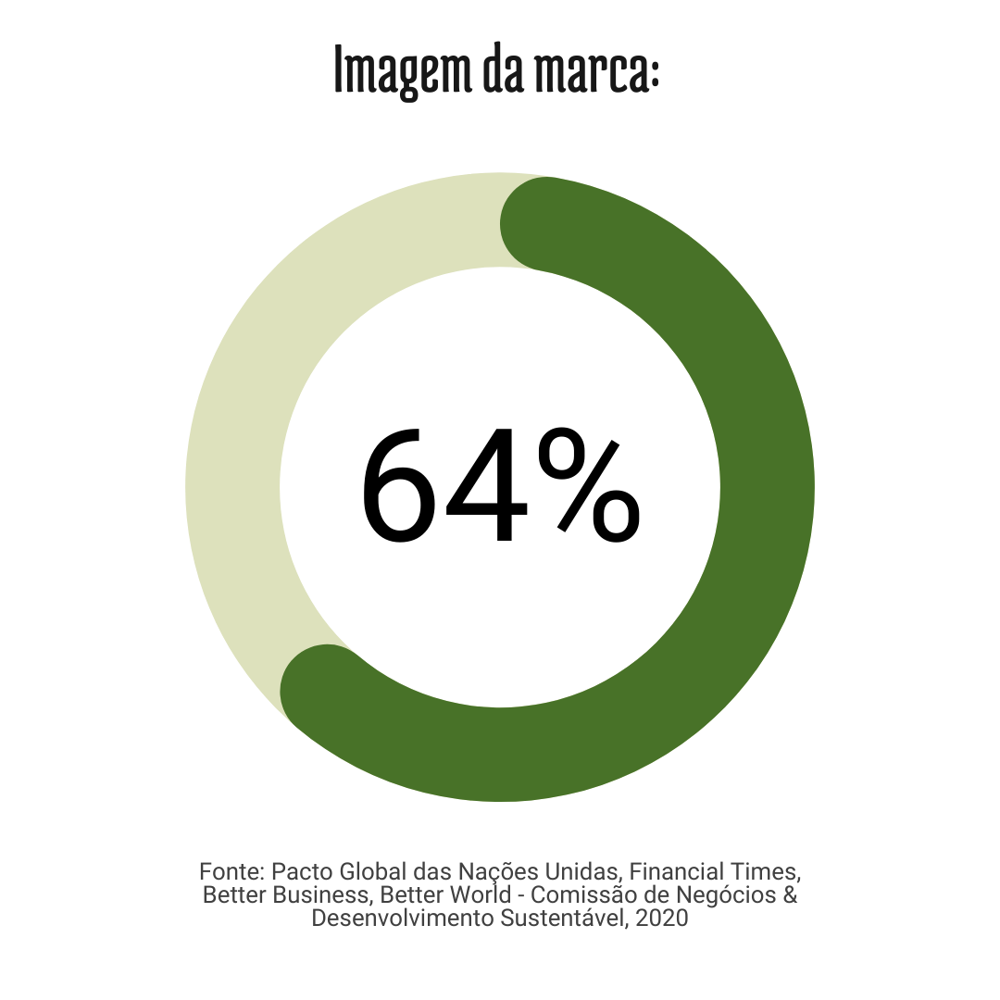

64% das pessoas acreditam que marcas com pautas ESG podem ser uma força poderosa para a mudança
que elas representam.
Procuramos empresas parceiras dispostas a doar tecnologia para essas tribos como forma de premiação para as aldeias com maior pontuação no ranking semestral.
Um sistema de ranking é capaz de estimular interesse por parte dos participantes em se esforçar para alcançar melhores colocações e prêmios focados na aldeia podem gerar uma competição mais comunitária como se cada aldeia fosse um time.